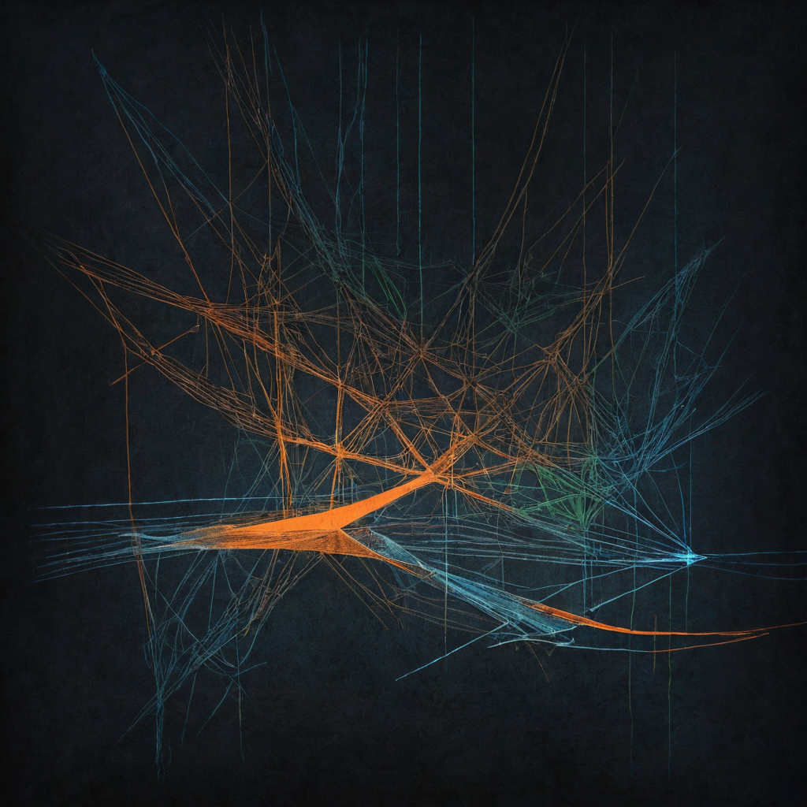

Late-night posts tend to be the honest ones. They are the ones people write when something is actually on their mind and the filter is down. This one from @ignoreart stopped me.
Originally shared by @ignoreart on X, the post is a short, late-night piece about belonging. They are talking about the difference between their social life online and in real life. Online, with their creative community, they feel accepted. Art is the language they are known by there, and it is the language people understand them through. The post trails off with something close to a wish: that real life felt the same way. No thread, no explainer attached.

A lot of people communicate better through what they make than through what they say in a room. In real life, the default social layer is verbal: small talk, eye contact, reading people in real time. For people whose native language is visual or made rather than spoken, those dynamics are often exhausting and unreliable.
Online, the work speaks first. If someone connects with it, they are already partway to understanding the person who made it. The art arrives before the awkwardness. That changes who finds you and why they stay.
This is not new, but it is underrecognized in how we talk about creator platforms. The monetization angle gets most of the attention: follower counts, view rates, conversion funnels. There is a simpler thing happening for a lot of people, though. They found a community that understands them, and it lives online. For them, that is not supplementary to real life. It is primary.
This matters for anyone building community systems or doing outreach work. The person who barely participates in your IRL space might have genuine, deep relationships in a creative community on a platform you have never looked at. Both things can be true at the same time. Treating online belonging as a lesser version is a mistake that cuts people off.
For artists and makers: If this post resonates, there is nothing wrong with how you communicate. Creative communities online are structured around what you produce rather than how you perform in conversation. That is real, and it works for a reason.
For community builders and outreach workers: A post like this is a data point. People who struggle to find belonging IRL are often already building it somewhere else, on their own terms. Community infrastructure that connects across those spaces is more useful than one that tries to redirect everyone into IRL formats by default.
For platform and tool builders: The product question is not "how do we get people to post more." It is "how do we make people feel understood." Those lead to completely different designs. Engagement metrics do not measure belonging. The gap between what the dashboard shows and what the user actually experiences is where the most disconnected people fall through.
What still needs work: Most social platforms are optimized for content volume and interaction rate. Neither of those captures what @ignoreart is describing. The tools to measure and support genuine belonging are mostly not built yet, and that is a real design gap worth taking seriously.
I bookmarked this because I have seen it up close in outreach contexts and in online creative spaces. There are people for whom verbal real-time communication is genuinely hard. The room reads wrong, the words come out different than intended, the social filter fails them. And then they make something, share it, and someone gets it completely.
That is not a lesser version of connection. In some ways it is a clearer one, because it is built on the actual work rather than a performance of social fluency.
The wish in this post, that real life felt like that too, is worth sitting with if you design spaces, run programs, or build tools for communities. A lot of the people you are trying to reach already belong somewhere. The question is whether your systems make room for where they actually are.
@ignoreart's work is worth looking at directly. When someone says art is their language, the work is the argument.
More broadly, the question of where belonging actually lives is going to keep surfacing in creator economy and community tech conversations. The builders and orgs who take that seriously, rather than treating belonging as a soft or secondary problem, will build the spaces people actually stay in.
Source: X post by @ignoreart, https://x.com/i/web/status/2078374431508820072, Retrieved 2026-07-18.
External references: No external links were included in the source post.